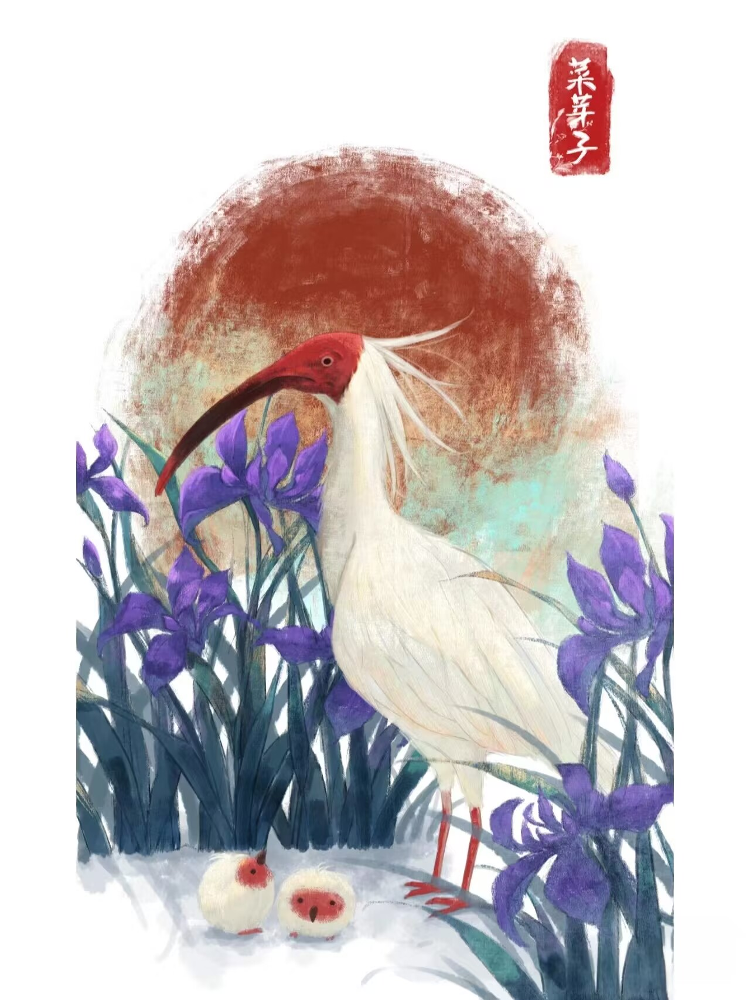
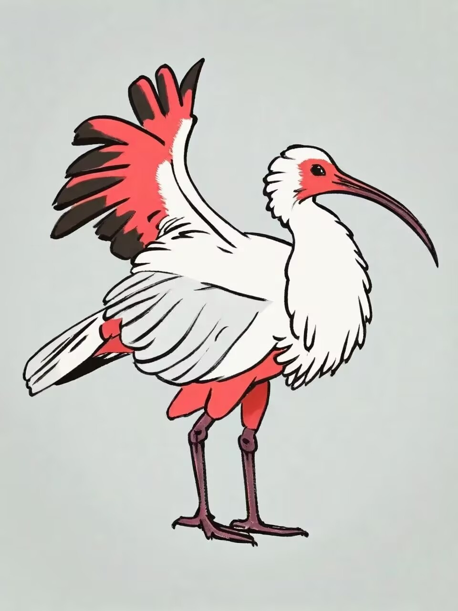

朱鹮想对你说：
“珍惜我们，共同守护这片天空。”

朱鹮（学名：Nipponia nippon）： 是鹮科、朱鹮属的鸟类动物，古称朱鹭、红朱鹭，朱鹮系东亚特有种。体重1400-1885克，体长68-79厘米。中等体型，体羽白色，后枕部有长的柳叶形羽冠，额至面颊部皮肤裸露，呈鲜红色；繁殖期时用喙不断啄取从颈部肌肉中分泌的灰色素，涂抹到头部、颈部、上背和两翅羽毛上，使其变成灰黑色。 栖息于海拔1200-1400米的疏林地带，在附近的溪流、沼泽及稻田内涉水，漫步觅食小鱼、蟹、蛙、螺等水生动物，兼食昆虫；在高大的树木上休息及夜宿；留鸟，秋、冬季成小群向低山及平原作小范围游荡；4-5月开始筑巢，每年繁殖一窝，每窝产卵2-4枚，由双亲孵化及育雏，孵化期约30天，40天离巢，性成熟为3岁，寿命最长的记录为37年。 曾广泛分布于中国东部、日本、俄罗斯、朝鲜等地，由于环境恶化等因素导致种群数量急剧下降。通过科学家的努力，人工繁殖，全球朱鹮种群数量已由1981年发现时的7只，增加到2021年5月的7000余只。